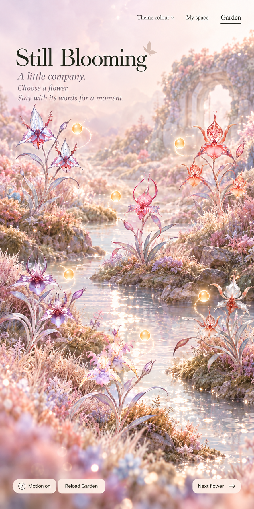
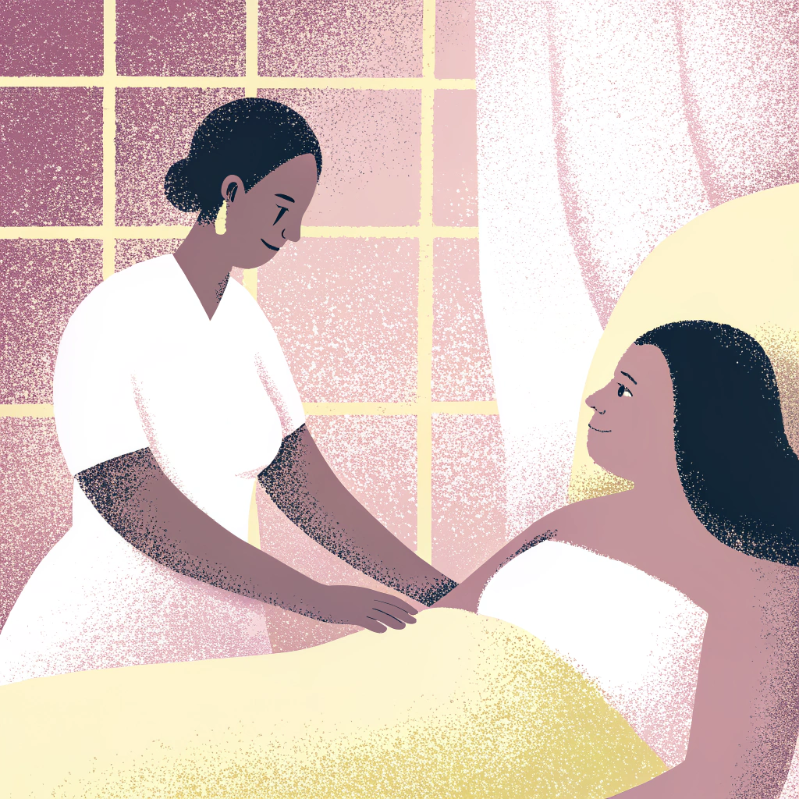
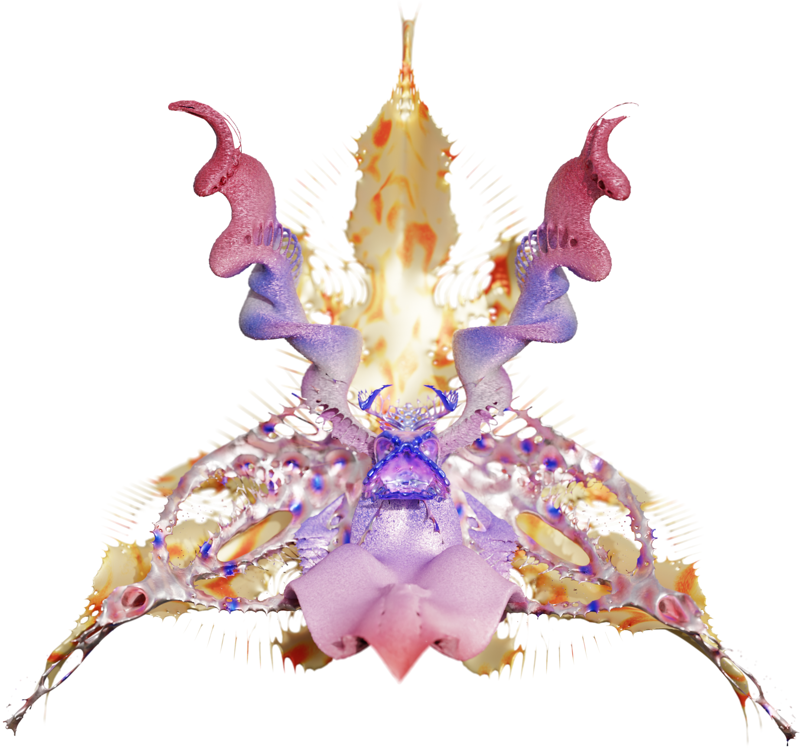
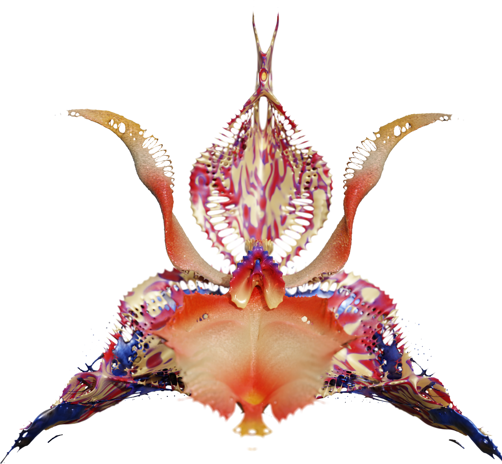
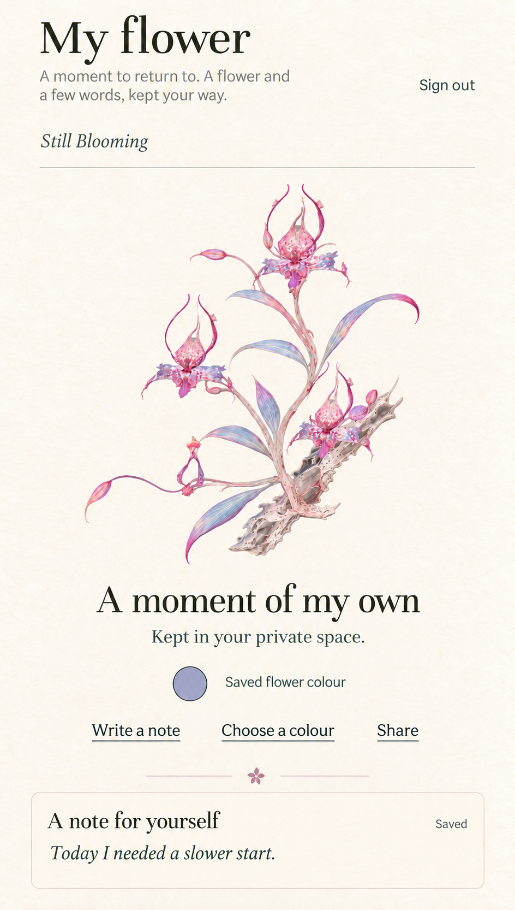
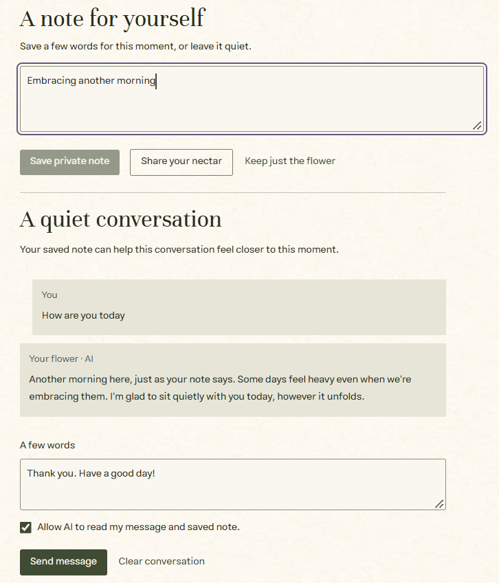
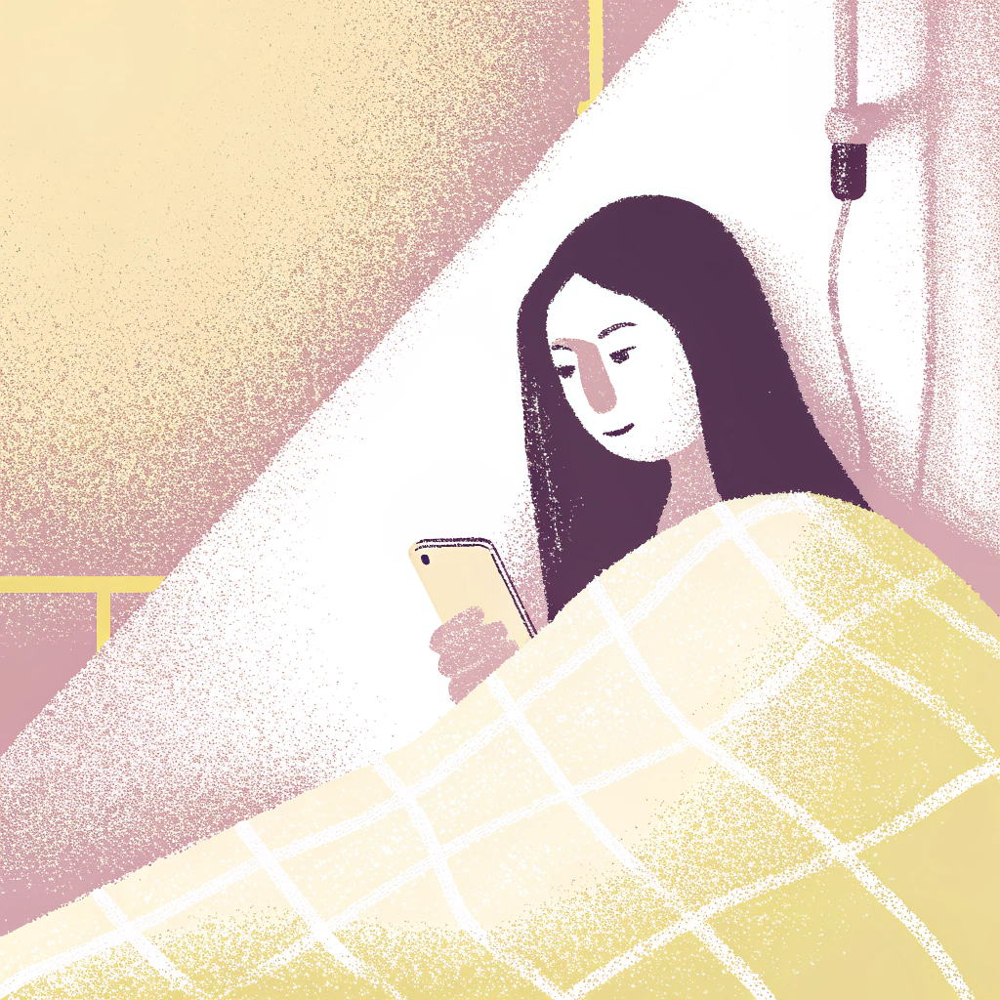

A little room
to be herself.
Keep a personal orchid. Leave a few private words. Share a moment when it feels right.
Follow the journeyCare continues
beyond a single visit.
A care record can capture a measurement. It cannot hold everything a mother feels as she returns to everyday life after childbirth.
Still Blooming asks how recognition might continue after an assessment: through a personal keepsake, a place for her own words, and support she can choose to receive.
An invitation.
A choice of her own.
Imagine a mother finishing a care visit. In our proposed service journey, a staff member introduces Still Blooming. She can choose to take part, using agreed records from her care team without another round of tests just to make an artwork.
An invitation opens her private space. A saved record becomes a new flower timepoint she can return to. Joining does not commit her to AI conversation or public sharing.
Feature Guide: Institiution
Her experience,
given another form.
We chose the Dendrobium orchid as a symbol of renewal. Its distinct parts become an artistic language for experiences that a measurement alone cannot express.
Selected records become bounded design parameters. Changes in form and texture give each artwork a particular character, rather than placing mothers on a scale of better or worse.


- Begin with contextAgreed measurements, their units and timing. Missing values remain missing.
- Translate into formControlled parameters shape the flower’s structures.
- Keep a momentA complete plant becomes a saved image and a 3D work she can explore.
From flower head to a web-ready artwork
- Shape
Blender nodes define the flower head through controlled parameters.
- Grow
AI-assisted image work extends its visual identity into a complete plant.
- Build
Image-to-3D production, material preparation and optimisation make the plant ready for the web.
- Connect
The artwork enters her private flower library and can accompany chosen public nectar.

First, a few words
just for herself.
Back at home, she opens her flower, turns it in 3D, and chooses a colour that feels like hers. She saves a note for this moment:
“Today I needed a slower start.”
She does not have to explain it to anyone. With her permission, a private AI conversation can draw on her message and saved note. The note also stands on its own; it does not need AI or an audience.
Feature Guide: My flowerSee the actual note and conversation



A moment to carry
into an ordinary day.
She returns to her own flower. She might keep that reply, revisit an earlier colour, or make a wallpaper with a few words for herself.
The visit has ended, but the keepsake remains a place she can return to. She can share again another day, or simply leave the garden and keep this moment private.
